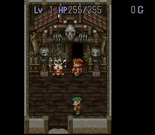

风来高手在挂轴洞窟运用高级技巧入手大量怪物肉的实况画面！
〖怪物一直线〗
マッドレムラスA：「“风来的西林GB3”今天终于发卖了，我忍辱偷生这么多年，等的就是这一天……」
マッドレムラスB：「是啊，我也是等了好久的，为了凑够钱我差点没把内裤给卖了！」
骸骨魔王：「楼上的真是我的偶像啊，为了能尽快玩到我昨晚7点就来排队了，没想到还有人比我更快。」
マッドレムラスC：「都早上10点了，BOSS还不来开门，是不是掉到水沟里了？」
マッドレムラスD：「干脆咱们踢烂门冲进去算了！」
マッドレムラスE：「不好，里面有狗仔队守卫的，还是等BOSS的狗仔队出差了再动手吧。」
エ`テルデビル：「喂喂，死神，你怎么跑那边去？还不赶快过来排队？迟了就买不到限定版了，限定版可是有绝密秘笈送哦！」
死神：「我这么强怎么可能需要排队呢？BOSS不听话我就勾走他的魂！哈哈^_^」 |
〖西林HOUSE〗
真・西林：「哇靠，怎么这么多跟我一模一样的风来人？」
西林博士：「欢迎光临西林精英研究所，你得感谢当代科学技术的发达，我们只需要一根西林的毛发，就能COPY出无数的西林。」
真・西林：「这有什么用？」
西林博士：「用处可大了，比如你想在北京开个演唱会，只需要派个COPY版西林到台上走几圈对对口型，大把大把的银子就入手了。又比如你想追MM，派N个COPY版西林同时出击，那么N个MM就入手了，又比如……」
真・西林：「もうやめて！别把人的生命当儿戏，这个世界只需要一个西林就够了。」
西林博士：「兄弟们，开工啦！」
假西林A：「为了维护世界的和平，为了保持宇宙的平衡，你这人渣必须消失！」
假西林B：「没错，单细胞生物没有存在的意义！」
假西林统帅：「全军突击……！」 |
〖菲VS店主〗
[剧情]自从西林在一次偷盗中不幸被店主KO之后，店主就开始了他的迷宫寻宝之旅，这天他慕名来到最终迷宫“风来人绝对领域”的入口。
店主：「阿菲，快开门让我进迷宫，我今天不找到“葵花宝典”誓不为人！」
菲：「此乃风来人专用迷宫，商人与狗不得入内！施主请回吧。」
店主：「竟敢拒绝我，就让你见识一下我新练成的铁头神功！（蓄力、运气）店主流派最终奥义――天崩地裂顶！！！」
|

菲：「好可怕的气劲啊，怪不得大部分风来人都不敢跟你斗，原来你是这么强DI，请允许我叫你一声前辈好吗？」
菲：「前辈，我刚出了张CD，叫“菲卖品”，销量很好呀～～～送一张给你收藏如何？」
店主：「废话少说，小心我O你，马上开门！」 |
 ［返回写真馆］
［返回写真馆］